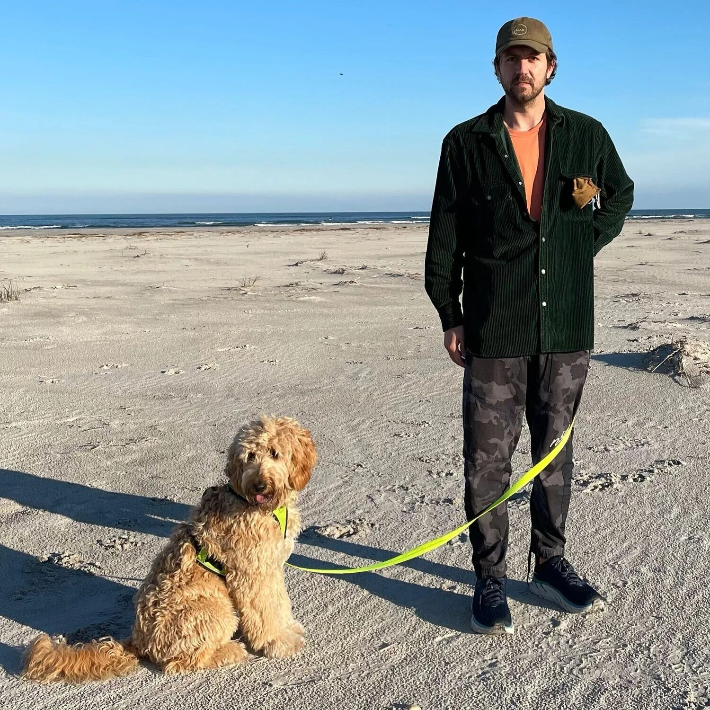

I create forward-thinking marketing strategies and experiences that amplify music and culture for leading tech brands, music platforms, and groundbreaking festivals.
I’ve spent over 20 years at the forefront of culture as a DJ, sneakerhead, and dot connector. Combine that with over ten years of working with the most well-known brands in the world. I bring a creative director’s vision, a music supervisor’s ear, and a producer’s type-A structure to every project.

Areas of Expertise
Music & Culture Marketing
Experiential Marketing
Artist & Label Relationships
Project Management
Digital Marketing and Social Media
Talent Buying and Curation